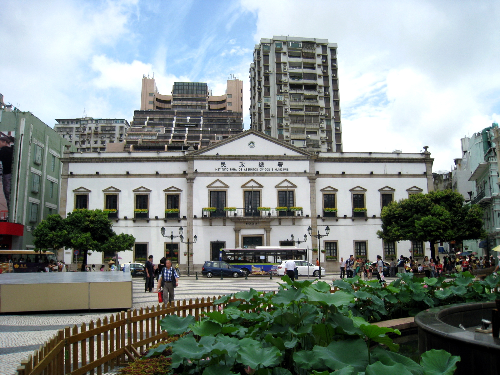

About Macau
Introduction of Macau
Macau - located on the western bank of the Pearl River Delta in southern Guangdong Province, People's Republic of China - adjoins the mainland city of Zhuhai and lies some 60 kilometres to the west of Hong Kong. Macau comprises Macau Peninsula, Taipa and Coloane. Macau Peninsula is the hub of the territory and is connected to Taipa by three bridges. Several large international hotel resorts - with new supporting infrastructure - are located on the reclaimed land between Taipa and Coloane in the newly developed district known as Cotai.
The Portuguese arrived and settled in Macau in the mid-16th Century. Thus, the city’s architecture, art, religion, traditions, food and community reflect the integration of Chinese, Western and Portuguese cultures. Macau became a Special Administrative Region of the People’s Republic of China on 20th December 1999 and exercises a high degree of autonomy under the principle of "One country, two systems". The SAR is growing in size with more buildings on reclaimed land, and in the number and diversity of its attractions. In 2005, The Historic Centre of Macau was inscribed on the UNESCO World Heritage List as a result of its unique historical and cultural landscape. Macau is currently positioning itself as the World Centre of Tourism and Leisure as it develops into a quality international tourist destination.
Macau is located in Guangdong province, on the western bank of the Pearl River Delta, at latitude 22º 14' North, longitude 113º 35' East and connected to Gongbei District by the Border Gate (Portas do Cerco) isthmus.
The Macau Special Administrative Region has an area of 30.8 km2, comprised of the Macau Peninsula (9.3 km2 and connected to Mainland China), Taipa (7.6 km2), Coloane (7.6 km2) and the reclaimed area COTAI (6.0 km2). Three bridges connect Macau to Taipa (one of them is 2.5 km long, the other one is 4.5 km long and the third one is 2.2 km long).
Besides the Border Gate (Portas do Cerco) - the visitor can access Mainland China through the COTAI Frontier Post. Immigration and Customs is located in the reclaimed area between Taipa and Coloane.
Macau is eight hours ahead of Greenwich Mean Time. Chinese and Portuguese are the official languages, Cantonese being most widely spoken. The official languages are used in government departments in all official documents and communications. English is generally used in trade, tourism and commerce.
Famous Sights
-
Ruins of St. Paul's
The Ruins of St. Paul's refer to the facade of what was originally the Church of Mater Dei built in 1602-1640, destroyed by fire in 1835, and the ruins of St. Paul's College, which stood adjacent to the Church. As a whole, the old Church of Mater Dei, St. Paul's College and Mount Fortress were all Jesuit constructions and formed what can be perceived as the Macau's "acropolis". Close by, the archaeological remains of the old College of St. Paul stand witness to what was the first western-style university in the Far East, with an elaborate academic programme. Nowadays, the facade of the Ruins of St. Paul's functions symbolically as an altar to the city.
Address: Company of Jesus Square
Opening Hours: 9 a.m. to 6 p.m., no admission after 5:30 p.m.

-
A-Ma Temple
A-Ma Temple already existed before the city of Macau came into being. It consists of the Gate Pavilion, the Memorial Arch, the Prayer Hall, the Hall of Benevolence, the Hall of Guanyin, and Zhengjiao Chanlin (a Buddhist pavilion). The variety of pavilions dedicated to the worship of different deities in a single complex make A-Ma Temple an exemplary representation of Chinese culture inspired by Confucianism, Taoism, Buddhism and multiple folk beliefs.
Address : Barra Square
Opening Hours: 7 a.m. to 6 p.m.
-
'Leal Senado' Building (now known as IAM Building)
Originally built in 1784, this was Macau's first municipal chamber, a function it maintains to the present. The name "Leal Senado" ("Loyal Senate") derives from the title "City of Our Name of God Macau, There is None More Loyal" which was bestowed by Portuguese King Dom John IV in 1654. The "Leal Senado" Building (now known as IAM Building) is neo-classical in design and has retained all its original master walls and primary layout, including the courtyard garden in the back. Inside the building on the first floor there is a ceremonial meeting room that opens onto an elaborate carved library styled after the library of Mafra Convent in Portugal, and a small chapel.
Address : No. 163 Av. Almeida Ribeiro (San Ma Lo)
Opening Hours: 9 a.m. to 9 p.m.
 Rua do Cunha
Rua do Cunha (官也街) is a narrow pedestrian street in Taipa, the town centre of Taipa, Macau. It is wrong to say that the street is named after the Portuguese explorer. It is known for shops selling almond cakes, phoenix egg rolls, coconut flakes, cherikoof, and peanut candy, which travellers buy as “souvenirs:, such as Choi Heong Yuen (咀香園) and Koi Kei (鉅記). It is also known for its various Portuguese restaurants, including 'O Santos', which has been in business since 1989, and 'O Galo'.
Address: Rua do Cunha, Taipa
Opening Hours: NA
See https://www.Macautourism.gov.mo/en/ for more detailed information about famous sights in Macau.